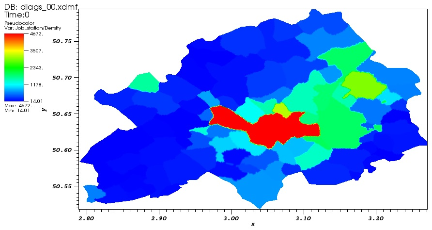

This study is a simulation approach that describes the daily movements of the population of a given territory in the presence of a pool of jobs, using a heat equation and a system of EDPs and ODEs, which makes it a relatively simple model to learn. Nevertheless, many parameters are associated with this model and need to be quantified before considering a numerical resolution of the model.
The aims of this study were: Propose a simplified model for an economic territory such as a city or a district, present this model with mathematical equations, propose a simulation code to solve this system of equations and to approach unknowns according to given parameters, calibrate the model parameters with a machine-learning process based on a database collected in a city or district and finally test the calibrated code and / or improve the mathematical model.
For see more details about this simulation, click here to see this video.
